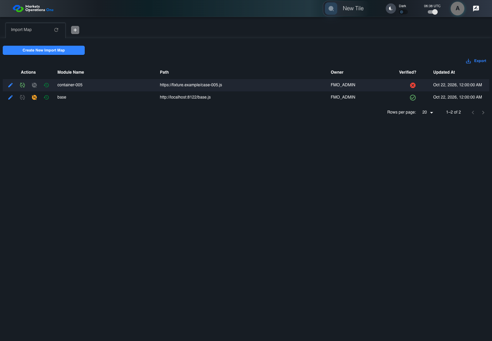
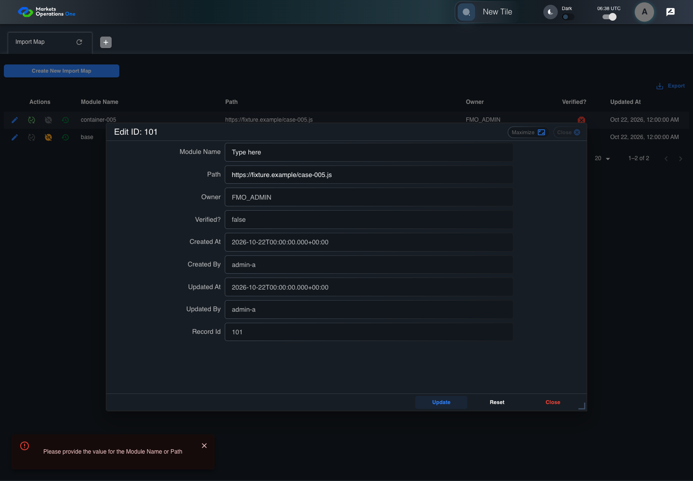

BFF-ADM-005 current BFF administration through actual UI
PASS · application/run-072/bff-adm-005-current-bff-administration-through-actual-ui-d7c1b0c7256e-attempt-1 · ACTUAL_APPLICATION_LOCAL_SERVICES
Actual current React and exact-current BFF admin controllers/services/JPA with actual migration DDL in disposable PostgreSQL. Controlled OUD/EMS2 identities and local Spring bootstrap. Fixture SQL seeds/mutates isolated records; service errors are actual database errors. Undefined agreed messages remain unresolved acceptance.
2026-10-22T06:38:46.844Z to 2026-10-22T06:38:50.606Z
Assertions and result · Artifact manifest · Exact run inputs and source hashes
Result SHA-256:f9ec5375cf0d4218a5bcd9327da8edfdbdc6dd998dedb00d299ac536d95ff9c0Machine observations
- actual-identity-projection.json
061405009f1aae0ec1f8a8df1fc9c71f785db851421253a6ff628a555eae5bef - baseline-inputs.json
cba44fdfc29a7531dcc35757967dd897d16e11b88fb69e32f4a921212eb6770c - bff-boundary.json
bed098324155fb4e04f6fb15e9b1dc24fb1e93c74d2d76808d104a05cbf0765a - committed-ui-submission-comparisons.json
2cdcaf3d2a05cd1254c916aba0002ec6e866aeecb3c09d8c3a07bb6bdf0271ab - fixture-step-4.json
2f2b6e33b47bb45e81348c2b48d534bbb143623e4e9def450223507281cb8c7d - fixture-step-5.json
f2c503a8d788b608ea737561d77d347197cf1439c077b7649139213b4e45b512 - initial-persisted-records.json
05e622ed8edd6b1ce9954d3c15a78dd36675bb22c29f0995e83bb90a74cf8e6c - persisted-after-submit.json
d885afd8ec4ea10a892b037b13d43fbf206552e2825150f9d066e13849cb033d - ui-origin-bff-requests.json
c332fe59e112d8b659239b06281c8c7c1b84da313ae4981ad773800d262a3eb2
Screenshot capture: CAPTURED. Named frames: 14.
Step screenshot evidence: COMPLETE. 13/13 canonical steps have execution screenshots.
Canonical step timeline
Given Admin A uses subject "admin-a" with role "FMO_ADMIN" in an isolated authenticated browser
Execution: PASSED.
1. step-01 Visible state after step 1: Given Admin A uses subject "admin-a" with role "FMO_ADMIN" in an isolated authenticated browser
2026-10-22T06:38:48.398Z · 1440×1000
Step: /Users/lushevol/code/github/ratan-release-impact/workbench/tasks/ui-test-coverage-20261022/test-cases.md:14810
SHA-256:3ec6cb34cae7860883804a0f1677a8381dbbfa59e9e8e3b90a757987ef3c051aAnd the controlled Import Map fixture records the initial grid rows and persisted values
Execution: PASSED.
2. step-02 Visible state after step 2: And the controlled Import Map fixture records the initial grid rows and persisted values
2026-10-22T06:38:48.513Z · 1440×1000
Step: /Users/lushevol/code/github/ratan-release-impact/workbench/tasks/ui-test-coverage-20261022/test-cases.md:14811
SHA-256:3ec6cb34cae7860883804a0f1677a8381dbbfa59e9e8e3b90a757987ef3c051aAnd the Import Map grid has record "101" owned by "FMO_ADMIN"
Execution: PASSED.3. step-03 Visible state after step 3: And the Import Map grid has record "101" owned by "FMO_ADMIN"
2026-10-22T06:38:48.563Z · 1440×1000
Step: /Users/lushevol/code/github/ratan-release-impact/workbench/tasks/ui-test-coverage-20261022/test-cases.md:14812
SHA-256:285dea845707fb297e22d3c31bf3e8f80dba72e9e95103aed7e057570140f755And the baseline fixture data defines "Module Name" as "container-005"
Execution: PASSED.
4. step-04 Visible state after step 4: And the baseline fixture data defines "Module Name" as "container-005"
2026-10-22T06:38:48.615Z · 1440×1000
Step: /Users/lushevol/code/github/ratan-release-impact/workbench/tasks/ui-test-coverage-20261022/test-cases.md:14813
SHA-256:3ec6cb34cae7860883804a0f1677a8381dbbfa59e9e8e3b90a757987ef3c051aAnd the baseline fixture data defines "Path" as "https://fixture.example/case-005.js"
Execution: PASSED.
5. step-05 Visible state after step 5: And the baseline fixture data defines "Path" as "https://fixture.example/case-005.js"
2026-10-22T06:38:48.667Z · 1440×1000
Step: /Users/lushevol/code/github/ratan-release-impact/workbench/tasks/ui-test-coverage-20261022/test-cases.md:14814
SHA-256:3ec6cb34cae7860883804a0f1677a8381dbbfa59e9e8e3b90a757987ef3c051aWhen Admin A clicks the button labeled "Edit" in the Import Map grid row with "Record Id" "101"
Execution: PASSED.6. step-06 Visible state after step 6: When Admin A clicks the button labeled "Edit" in the Import Map grid row with "Record Id" "101"
2026-10-22T06:38:48.903Z · 1440×1000
Step: /Users/lushevol/code/github/ratan-release-impact/workbench/tasks/ui-test-coverage-20261022/test-cases.md:14815
SHA-256:51c80d06acf2bbec77836c32c7d899e32383fe020e55a23fd08d28cbc994278fThen the dialog titled "edit ID: 101" is visible on the Import Map administration page
Execution: PASSED.7. step-07 Visible state after step 7: Then the dialog titled "edit ID: 101" is visible on the Import Map administration page
2026-10-22T06:38:48.952Z · 1440×1000
Step: /Users/lushevol/code/github/ratan-release-impact/workbench/tasks/ui-test-coverage-20261022/test-cases.md:14816
SHA-256:8cb0d806d95affc84496a16fdbf2dfe2f0b0b18cc778f6926c2ac78a2f0498bbWhen Admin A fills the textbox labeled "Module Name" with "" in dialog "edit ID: 101"
Execution: PASSED.8. step-08 Visible state after step 8: When Admin A fills the textbox labeled "Module Name" with "" in dialog "edit ID: 101"
2026-10-22T06:38:49.375Z · 1440×1000
Step: /Users/lushevol/code/github/ratan-release-impact/workbench/tasks/ui-test-coverage-20261022/test-cases.md:14817
SHA-256:4267cf30d126297e30790e0563d4954bc644f8982886499a0b3c5d28736e41c4And Admin A fills the textbox labeled "Path" with "https://fixture.example/case-005.js" in dialog "edit ID: 101"
Execution: PASSED.9. step-09 Visible state after step 9: And Admin A fills the textbox labeled "Path" with "https://fixture.example/case-005.js" in dialog "edit ID: 101"
2026-10-22T06:38:49.796Z · 1440×1000
Step: /Users/lushevol/code/github/ratan-release-impact/workbench/tasks/ui-test-coverage-20261022/test-cases.md:14818
SHA-256:d7f3872dd308e19640fa4a4d2e4d15107eb83598dc04133301a096366c8d7497And Admin A clicks the button labeled "Update" in dialog "edit ID: 101"
Execution: PASSED.10. step-10 Visible state after step 10: And Admin A clicks the button labeled "Update" in dialog "edit ID: 101"
2026-10-22T06:38:50.039Z · 1440×1000
Step: /Users/lushevol/code/github/ratan-release-impact/workbench/tasks/ui-test-coverage-20261022/test-cases.md:14819
SHA-256:148b40f9d4cc4c1a6bc8722a332c7671ac499e84819eeaf51a5b3d81fce11e1fThen the dialog titled "edit ID: 101" remains visible on the Import Map administration page
Execution: PASSED.
11. step-11 Visible state after step 11: Then the dialog titled "edit ID: 101" remains visible on the Import Map administration page
2026-10-22T06:38:50.087Z · 1440×1000
Step: /Users/lushevol/code/github/ratan-release-impact/workbench/tasks/ui-test-coverage-20261022/test-cases.md:14820
SHA-256:70629307f4b4a5ab4c1a38a8e2042a8d0deec3fa84e41f7bf9ec4c05e8680f7cAnd the alert with severity "error" in the portal snackbar contains the exact text "Please provide the value for the Module Name or Path"
Execution: PASSED.
12. step-12 Visible state after step 12: And the alert with severity "error" in the portal snackbar contains the exact text "Please provide the value for the Module Name or Path"
2026-10-22T06:38:50.132Z · 1440×1000
Step: /Users/lushevol/code/github/ratan-release-impact/workbench/tasks/ui-test-coverage-20261022/test-cases.md:14821
SHA-256:70629307f4b4a5ab4c1a38a8e2042a8d0deec3fa84e41f7bf9ec4c05e8680f7cAnd the Import Map data grid with column "Record Id" row identifiers and loaded field values equal the initial grid snapshot on the Import Map administration page
Execution: PASSED.
13. step-13 Visible state after step 13: And the Import Map data grid with column "Record Id" row identifiers and loaded field values equal the initial grid snapshot on the Import Map administration page
2026-10-22T06:38:50.233Z · 1440×1000
Step: /Users/lushevol/code/github/ratan-release-impact/workbench/tasks/ui-test-coverage-20261022/test-cases.md:14822
SHA-256:70629307f4b4a5ab4c1a38a8e2042a8d0deec3fa84e41f7bf9ec4c05e8680f7c
Additional named frames

The final visible state after the named test assertions.
2026-10-22T06:38:50.349Z · 1440×1000Step: Test source: /Users/lushevol/code/github/ratan-release-impact/workbench/e2e/audit-specs/bff-admin.spec.ts:11
SHA-256:
70629307f4b4a5ab4c1a38a8e2042a8d0deec3fa84e41f7bf9ec4c05e8680f7cScreenshots establish visible state only. Assertions and traces support functional claims.